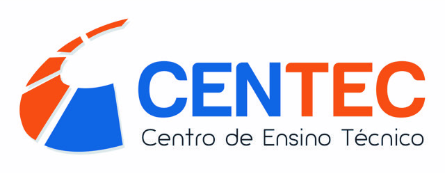

CENTEC - Centro de Ensino Técnico
Curso Técnico em Informática
Sobre o Curso
O Técnico em Informática instala sistemas operacionais, aplicativos e periféricos para desktop e servidores. Desenvolve e documenta aplicações para desktop com acesso à web e a banco de dados. Realiza manutenção de computadores de uso geral. Instala e configura redes de computadores locais de pequeno porte.
Mercado de Trabalho
O mercado de trabalho para o técnico em Informática é amplo, oferecendo a possibilidade de atuação em diversos setores da área de tecnologia da informação (TI) e a grande oferta de vagas disponíveis que necessitam de mão de obra especializada. Além disso, existe a possibilidade de empreender na área ou atuar com Prestação autônoma de serviço e manutenção de informática, além de empresas de assistência técnica e Centros públicos de acesso à internet.
Módulo Específico:
- Língua Portuguesa e Comunicação para o Trabalho
- Inglês Instrumental
- Direito e Legislação Aplicados a Informática
- Sistemas Operacionais
- Gestão e Negócios Aplicados a Informática
- Lógica de Programação
- Arquitetura e Organização de Computadores
- Linguagem de Programação
- Banco d Dados
- Banco de Dados
- Engenharia de Software
- Engenharia de Software
- Técnicas de Programação para Internet
- Segurança Digital
- Instalação e Manutenção de Computadores
- Programação de Computadores
- Programação para dispositivos Móveis
- Redes e Comunicação de Dados
- Desenvolvimento de Software
Quer retornar ao módulo básico?Clique aqui.